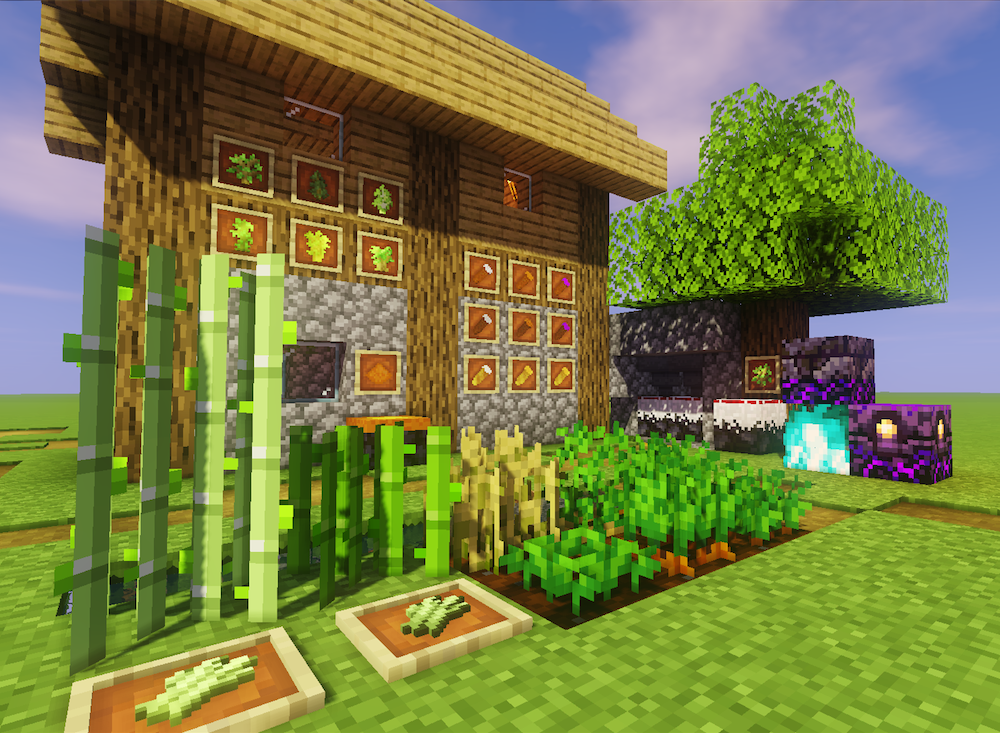
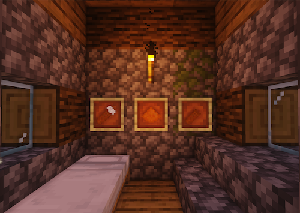
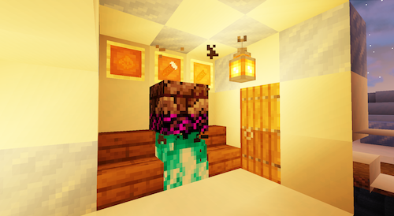
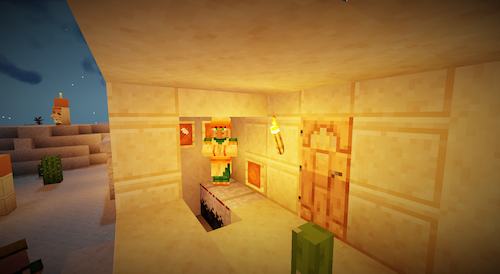
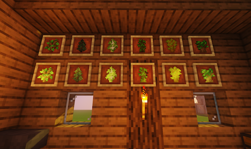

Objectif
Étendre l’agriculture Minecraft avec patates douces, transformation et magie, de la récolte au broyage, à la conversion et à l’enchantement.
L'agriculture rencontre la magie ! Un mod Minecraft co-développé avec @teddyxlandlee, ajoutant des patates douces, des stations agricoles, des broyeurs, des marmites magiques, des cultures enchantées, etc.

Sweet Potato Mod est un mod Minecraft collaboratif qui prolonge la culture des patates douces par la transformation et la magie. Plusieurs variétés fournissent des matériaux comme la farine ; un broyeur les traite et une marmite activée par le feu des âmes transforme ou enchante les cultures. Jeunes arbres et plantes enchantés ajoutent une autre mécanique de croissance. La page présente contenu, équipe, téléchargement et suivi des problèmes.
Étendre l’agriculture Minecraft avec patates douces, transformation et magie, de la récolte au broyage, à la conversion et à l’enchantement.
Utiliser le lien de téléchargement et le wiki de l’équipe pour les variétés, le broyeur et le chaudron magique. Dans le jeu, cultiver, broyer, puis activer le chaudron selon le wiki.
Le mod repose sur Minecraft Fabric et Java ; le code et les ressources définissent cultures, blocs et recettes ajoutés.
La page relie fonctions, contributeurs, téléchargement et retours. Vérifier versions compatibles et dépendances sur la page de téléchargement.

Une catégorie d'aliments ajoutée par ce mod. Elle se décline en variétés violette, rouge et blanche, chacune avec trois sous-variantes, plus la poudre et les pelures de patate douce.

Le cube magique émane d'un éclat sombre. Activez-le en allumant un feu d'âmes dans la zone 3×3 en dessous, convertissant trois patates douces crues de n'importe quelle variété en d'autres variétés ou les enchanter aléatoirement.

Le broyeur est équipé d'une meule qui broie les patates douces en poudre de patate douce.

Les pousses et cultures enchantées poussent plus vite que les vanilla et deviendront des arbres ou cultures enchantées.